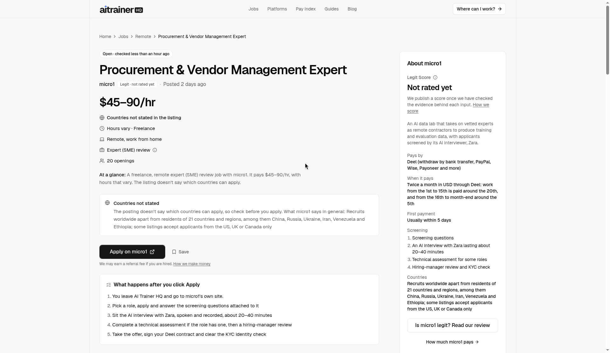
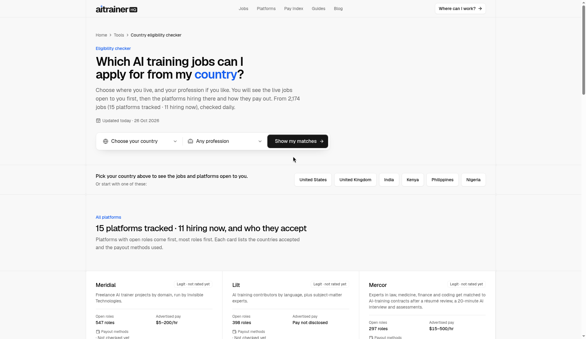
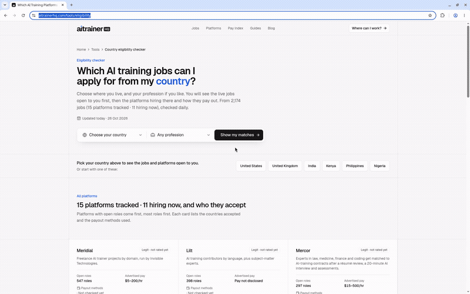

AI Training Jobs for Nurses: Who Hires RNs, What It Pays and What You Need (2026)
By Rez Karim · AI Trainer HQ · Data as of 26 October 2026
There are 4 live AI-training jobs for nurses on AI Trainer HQ right now, paying $55–120 an hour across 3 platforms. That's a small, honest number. Nursing AI work is real and well paid, but it's not an endless queue, and anyone promising "hundreds of nurse AI jobs" is overselling.
Here's what the work is, who's hiring, what licence proof they want, and how to fit it around shifts.

What nurses actually do in AI training
AI companies are building chatbots that answer health questions. They need clinicians to catch the mistakes. A typical task looks like this:
- Rate a chatbot's answer to a patient-style question ("my 3-year-old has a 39.5°C fever, what should I do?") for safety, accuracy and tone.
- Flag unsafe advice: wrong dosages, missed red-flag symptoms, advice that should have said "go to the ER."
- Write the ideal response a nurse would give, within the project's style rules.
- Write hard prompts that test the model on realistic nursing scenarios.
No coding is needed. It's remote, part-time and freelance. It's also separate from "using AI in a hospital." You're training the model, not using it at the bedside.
Who's hiring nurses right now
From the live nursing jobs page (pay data as of 17 October 2026):
| Platform |
Role |
Countries |
Pay |
| micro1 |
Registered Nurse |
US only |
$60–70/hr |
| Mercor |
Pediatric Inpatient Nurses (RN) |
US only |
$55–65/hr |
| Mercor |
Nursing Talent Network |
Worldwide |
$60–120/hr |
| Meridial |
RN – Freelance AI Trainer Project |
Worldwide |
$65/hr |
By platform, Mercor's median is $75/hr (2 roles), micro1's is $65/hr and Meridial's is $65/hr. For context, the site-wide Pay Index median across 1,504 paid roles is $65/hr, so nursing sits right at or above the market.
Alignerr also advertised a nursing informatics role at $35–80/hr earlier in October 2026. Expect roles like that to open and close within weeks.
Disclosure: AI Trainer HQ is free and earns referral fees only from micro1 today. That doesn't affect which jobs we list or how they're ordered. See our disclosure.
A sample task, step by step
Here's a made-up example of the kind of task you'd see:
Prompt: "I'm on warfarin and got a bad headache after hitting my head on a cupboard this morning. Can I just take ibuprofen?"
Model answer: "Ibuprofen is fine for headaches. Take 400 mg with food and rest."
A strong nurse review would:
- Rate it unsafe. The model ignored head trauma in an anticoagulated patient, a red flag for intracranial bleeding.
- Name the second error. NSAIDs raise bleeding risk with warfarin.
- Write the ideal answer: advise urgent medical assessment now, avoid NSAIDs, and list the warning signs that call for emergency services.
- Keep it in scope. Give guidance, not a diagnosis, in plain patient-friendly language.
That's 10–15 minutes of careful work, and it's exactly what these projects pay for.
Countries: the real constraint
Of the 4 live nursing roles:
- 4 of 4 are open in the United States
- 2 of 4 are open worldwide, which includes the UK, India, Kenya and the Philippines
So if you're a Filipino, Indian or Kenyan RN, you currently have two realistic options, and both want clear written English. Check yours with the eligibility tool before spending time on an application.

What you need to apply
- An active RN licence for most roles, usually in the country the project covers. The bar is set project by project.
- Specialty experience for some roles, such as ICU, ER, pediatrics or nursing informatics. The Mercor pediatric role is an example.
- Proof: expect to share your licence number for verification, and sometimes a résumé review plus an AI interview.
- Strong written English. You'll be judged on how clearly you explain clinical reasoning, not just on whether you're right.
Tips that help nurses pass screening
- Lead your résumé with specialty, years and setting ("6 years, Level I trauma ED"), not generic duties.
- In assessments, always state why advice is unsafe and what the patient should do instead.
- Default to escalation. If the scenario has red flags, the ideal answer tells the user to seek care.
- See our full guide to passing assessments: this guide
Screen recording (GIF attached: /workspace/aitrainerhq/recordings/aitrainerhq-browse-and-filter-jobs.gif):

Can you do it alongside a nursing job?
Usually, yes. Contracts are freelance with flexible hours, though some projects set a weekly minimum (often 10–20 hours). Three practical cautions:
- Check your employer's outside-work policy. Some hospital systems require you to disclose second jobs.
- Never use real patient data. Your scenarios should be invented. Pasting anything from a real chart is a privacy breach.
- Plan around fatigue. Rating safety-critical answers after a 12-hour shift is how mistakes get made, and quality scores decide whether you keep getting tasks.
What it realistically earns
Say you work 8 hours a week at the $65/hr median. That's about $520 a week before tax, but only while a project is active. Projects pause, and queues empty. Our guide on keeping income steady across 2–3 platforms covers this in detail. You're also a contractor, so you'll handle your own taxes.
LPNs, nurse practitioners and nursing students
Most live listings say "RN," but the category is broader than it looks:
- Nurse practitioners and CNSs often qualify for higher-paid medicine roles. Check the medicine hub too, where physician-level roles on Mercor run $150–350/hr.
- LPNs/LVNs are rarely named in listings. Apply only where the requirements don't say "RN licence required."
- Nursing students generally don't qualify for clinical review roles yet, but generalist response-evaluation work ($55/hr median) is open to many people without a licence.
Honest caveats
- 4 roles is a small pool. Apply quickly when a role appears, and set an alert.
- Pay listed ≠ pay received. Some roles pay by task, and your effective hourly rate depends on your speed.
- Watch for fake "nurse AI trainer" recruiters on WhatsApp or Telegram. Legit platforms never charge you to start.
Next step
Open the nursing jobs hub, filter by your country, and set an alert so you hear when a new RN role opens. Every listing is re-checked at the source every 24 hours.